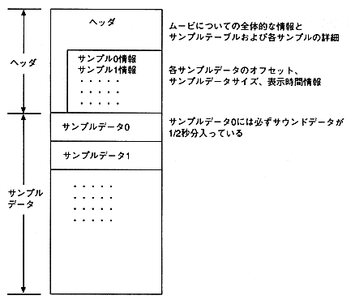

To change the sound sampling frequency
Sounds handled by QuickTime editing tools are usually 44.1KHz, 22.254KHz, and 11.127KHz. Saturn, on the other hand, can play back sampling frequencies below 44.1KHz. If you want to use a sound other than 44.1KHz, 22.254KHz, or 11.127KHz, use a QuickTime editing tool such as Adobe Premiere to cut the original soundtrack, save it to an AIFF file, and use the sound utility. Downsample the AIFF file. Next, after compressing the movie with Cinepak, add the downsampled sound to the movie.
Note MovieConverter does not properly process movies longer than 54 seconds. 54 seconds or more Apple QuickTime Developer's Kit CD-ROM for processing movies Please use the Convert to Movie utility included in .